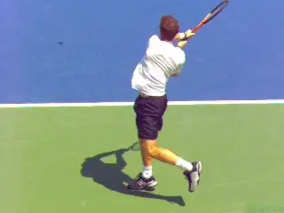
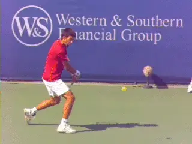
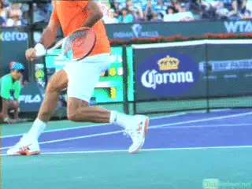
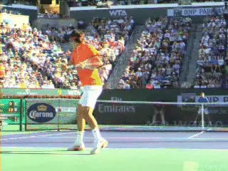
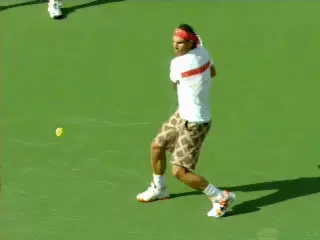

The myth of the Recovery Step:
Comprehensive unified tennis knowledge base — Fundamentals, Stroke Analysis, Reference Library, and more
The myth of the Recovery Step:
Backhand
John Yandell
In the last article we saw the sequencing of the recovery step on the forehand in pro tennis. Contrary to some coaching theories, the outside foot does not swing around as part of the stroke, instead happening after the completion of the extension of the forward swing. (Click Here.)
Now let's look at the recovery step the pro backhand, both the one-hander and the two. High video shows that despite important differences in the stances, the sequences are similar.

The sequence of the backhand recovery step is fundamentally similar to the forehand.
The recovery step is not part of the stroke. It follows the completion of the forward swing. If anything, the recovery step can be less pronounced on the backhands.
"Advanced" Footwork
Again, this conclusion is counter to one school of "advanced" coaching which argues that court coverage and even shotmaking are enhanced by throwing the recovery foot around as part of the motion in the stroke.
A friend I used to hit with was working with a pro in the Bay Area who was a big proponent of this "early pro timing" recovery step. That pro thought he saw the top players dramatically speeding the body rotation by throwing the recovery step around.
His thinking was extreme. He believed that even for a 4.0 player like my friend the body should be completely open to the net at the completion of the forward swing--and, of course, "ready" to recover faster.

The actual sequence: forward swing to extension with the recovery foot still well behind-- only then swinging around to the outside.
My friend had adopted this "advanced" footwork on his one-handed backhand. His backhand was clearly his weaker side before, and after the change, he would occasionally produce a shot that seemed to have more velocity. But the reality was his backhand was much worse and had become phenomenally inconsistent.
Nevertheless, as with so many players, my friend was oblivious to actual results. He was completely enamored with his use of what he thought was "pro" technique.
Reality
So what is the reality for the pros my friend thought he was emulating? How does the recovery step work on high level backhands?
The answer is simple for anyone who takes the time to study high speed video frame by frame. As with the forehand, the recovery foot stays in the position dictated by the stance until after the extension of the forward swing.
Watch in the animation how the players reach the outward and upward completion of the motion. Now as the racket starts to move backwards in the wrap on the final deceleration phase, the rear foot starts to move around.
The sequence is forward swing, recovery step. And from there the player pushes off with the recovery step to return toward the center of the court. Again, forward swing, recovery step, and then movement back toward the center.
The Rear Foot
Despite this general principle there are also some differences to understand between forehands and backhand. First, the spacing or width of the recovery step to the outside is often less on the backhands.

The closed stance with the rear recovery foot behind can mean the recovery step itself lands less to the player's side.
The reason is related to the differences in the stances. On the forehand the players are usually hitting with open stances and the recovery foot is the outside or left foot closest to the ball.
On high level men's backhands, however, we have seen that the preferred stance is closed stance, created with a large diagonal cross step.
This is true for the two-hander, (Click Here) and for the one-hander as well. (Click Here.) In both cases with the closed stance, the recovery foot is now the foot furthest from the ball, significantly behind the position of the front foot.
This means the distance between the feet is typically wider than on a forehand. To swing around, the rear foot actually comes from up to several feet further away.
That can mean the actual length of the recovery step is longer. But because of where it starts the landing point is often less to the outside and closer to the player's body, or even in line with the front foot.
The Kick Back
In addition to the exact positioning of the recovery step, another important difference to understand is the relationship between the rear foot and the body rotation. We saw on the forehand that the recovery foot can actually kick slightly backwards before coming around.
This kick back can be more extreme on the backhand. This is due to the differences in the positioning of the shoulders at contact.

The rear foot can move backwards-sometimes substantially-- in order to control the amount and timing of the body rotation.
As we have seen, at contact on the forehand the shoulders and hips are usually open or parallel to the net. But the shoulder positions at contact on pro backhands are more closed.
On the pro one-hander the hips and shoulders are roughly perpendicular to the net at contact. That's 90 degrees or so less rotation than the forehands.
On the pro two-hander the angle of the shoulders is about 45 degrees to the net. That's about half the rotation of the forehand.
In both cases, early movement of the recover step opens the shoulders too much too soon and destroys this alignment. This explains why there is sometimes more pronounced backward motion with the recovery step.
By keeping the rear foot behind and/or kicking it backwards, players slow or reduce the body rotation helping create the proper, more closed alignments at contact.
Destruction
All this makes the idea of swinging the recovery foot around on the backhand a worse idea even than on the forehand. Why, because it is more disruptive of the proper sequence of the body rotation. Ironically, in the attempt to add "advanced" elements to your game you can actually end up destroying the core elements in your strokes.

On the open stance backhand, the recovery step pattern is more similar to the forehand.
Open Stance
Although most high level backhands are hit closed stance, the open stance is used strategically and situationally by both one-handers and two handers. For open stance backhands, the same basic timing of the recovery step applies.
The recovery step starts at the completion of the forward swing as the racket moves into the wrap or final deceleration phase. But the pattern is probably more similar to the open stance forehand, because the recovery foot is now the outside foot closest to the ball.
In general, the principles are clear across the pro ground strokes. Coaches and players can be fooled by the movements of top players in real time. They can also be fooled by video, such as the ubiquitous you tube clips, that don't allow frame by frame advance. Still these clips are posted endlessly on messages boards to "support" stroke analysis when what they really show may be something totally different than what is claimed.
If you are working on your footwork, including the critical aspect of recovery, make sure you video yourself and take a close look at the sequence of the motion, including the all critical extension of the swing. That's the way to maximize not only your shot production but your ability to cover the court as rapidly and efficiently as possible!

John Yandell is widely acknowledged as one of the leading videographers and students of the modern game of professional tennis. His high speed filming for Advanced Tennis and Tennisplayer have provided new visual resources that have changed the way the game is studied and understood by both players and coaches. He has done personal video analysis for hundreds of high level competitive players, including Justine Henin-Hardenne, Taylor Dent and John McEnroe, among others.
In addition to his role as Editor of Tennisplayer he is the author of the critically acclaimed book Visual Tennis. The John Yandell Tennis School is located in San Francisco, California.
Source: tennisplayer.net archive — The myth of the Recovery Step - Backhand.docx (John Yandell teaching library, 2002-2022). Extracted and rendered as HTML for Tennis Future Lab.